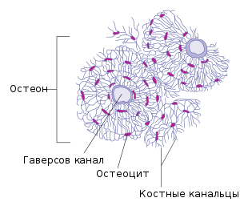
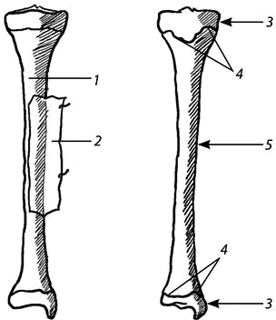

Глава 3. Развитие кости
Образование любой кости происходит за счет молодых соединительнотканных клеток мезенхимного происхождения – остеобластов, которые вырабатывают межклеточное костное вещество, играющее главную опорную роль. Соответственно отмеченным 3 стадиям развития скелета кости могут развиваться на почве соединительной или хрящевой ткани, поэтому различаются следующие виды окостенения (остеогенеза).

Рис 3.1 Микроскопическая структура кости
1. Эндесмальное окостенение (en – внутри, desme – связка) происходит в соединительной ткани первичных, покровных, костей. На определенном участке эмбриональной соединительной ткани, имеющей очертания будущей кости, благодаря деятельности остеобластов появляются островки костного вещества (точка окостенения). Из первичного центра процесс окостенения распространяется во все стороны лучеобразно путем наложения (аппозиции) костного вещества по периферии. Поверхностные слои соединительной ткани, из которой формируется покровная кость, остаются в виде надкостницы, со стороны которой происходит увеличение кости в толщину.
2. Перихондралъное окостенение (peri – вокруг, chondros – хрящ) происходит на наружной поверхности хрящевых зачатков кости при участии надхрящницы (perichondrium). Мезенхимный зачаток, имеющий очертания будущей кости, превращается в "кость", состоящую из хрящевой ткани и представляющую собой как бы хрящевую модель кости. Благодаря деятельности остеобластов надхрящницы, покрывающей хрящ снаружи, на поверхности его, непосредственно под надхрящницей, откладывается костная ткань, которая постепенно замещает ткань хрящевую и образует компактное костное вещество.
3. С переходом хрящевой модели кости в костную надхрящница становится надкостницей (periosteum) и дальнейшее отложение костной ткани идет за счет надкостницы – периосталъное окостенение. Поэтому перихондральный и периостальный остеогенезы следуют один за другим.
4. Эндохондралъное окостенение (endo, греч. – внутри, chondros – хрящ) совершается внутри хрящевых зачатков при участии надхрящницы, которая отдает отростки, содержащие сосуды, внутрь хряща. Проникая в глубь хряща вместе с сосудами, костеобразовательная ткань разрушает хрящ, предварительно подвергшийся обызвествлению (отложение в хряще извести и перерождение его клеток), и образует в центре хрящевой модели кости островок костной ткани (точка окостенения). Распространение процесса эндохондрального окостенения из центра к периферии приводит к формированию губчатого костного вещества. Происходит не прямое превращение хряща в кость, а его разрушение и замещение новой тканью, костной.
Характер и порядок окостенения функционально обусловлены также приспособлением организма к окружающей среде. Так, у водных позвоночных (например, костистых рыб) окостеневает путем перихондрального остеогенеза только средняя часть кости, которая, как во всяком рычаге, испытывает большую нагрузку (первичные ядра окостенения). То же наблюдается и у земноводных, у которых, однако, средняя часть кости окостеневает на большем пространстве, чем у рыб. С окончательным переходом на сушу к скелету предъявляются большие функциональные требования, связанные с более трудным, чем в воде, передвижением тела по земле и большей нагрузкой на кости.
Поэтому у наземных позвоночных появляются вторичные точки окостенения, из которых у пресмыкающихся и птиц путем эндохондрального остеогенеза окостеневают и периферические отделы костей. У млекопитающих концы костей, участвующие в сочленениях, получают даже самостоятельные точки окостенения. Такой порядок сохраняется и в онтогенезе человека, у которого окостенение также функционально обусловлено и начинается с наиболее нагружаемых центральных участков костей.
Рост кости
Длительный рост организма и огромная разница между размерами и формой эмбриональной и окончательной кости таковы, что делают неизбежной ее перестройку в течение роста; в процессе перестройки наряду с образованием новых остеонов идет параллельный процесс рассасывания (резорбция) старых, остатки которых можно видеть среди новообразующихся остеонов ("вставочные" системы пластинок). Рассасывание есть результат деятельности в кости особых клеток – остеокластов (clasis, греч. –ломание).
Благодаря работе последних почти вся эндохондральная кость диафиза рассасывается и в ней образуется полость (костномозговая полость). Рассасыванию подвергается также и слой перихондральной кости, но взамен исчезающей костной ткани откладываются новые слои ее со стороны надкостницы. В результате происходит рост молодой кости в толщину. В течение всего периода детства и юности сохраняется прослойка хряща между эпифизом и метафизом, называемая эпифизарным хрящом, или пластинкой роста. За счет этого хряща кость растет в длину благодаря размножению его клеток, откладывающих промежуточное хрящевое вещество. Впоследствии размножение клеток прекращается, эпифизарный хрящ уступает натиску костной ткани и метафиз сливается с эпифизом – получается синостоз (костное сращение).

Рис. 3.2 Длинная кость (большеберцовая правая): 1 – наружный слой надкостницы; 2 – внутренний слой надкостницы; 3 – эпифизы (концы); 4 – метафизы (зоны роста кости); 5 – диафиз
Соответственно описанному развитию и функции в каждой трубчатой кости различаются следующие части:
1. Тело кости, диафиз, представляет собой костную трубку, содержащую у взрослых желтый костный мозг и выполняющую преимущественно функ ции опоры и защиты. Стенка трубки состоит из плотного компактного вещества, substantia compacta, в котором костные пластинки расположены очень близко друг к другу и образуют плотную массу.
Компактное вещество диафиза разделяется на два слоя соответственно окостенению двоякого рода:
а) наружный кортикальный (cortex – кора) возникает путем перихондрального окостенения из надхрящницы или надкостницы, откуда и получает питающие его кровеносные сосуды;
б) внутренний слой возникает путем эндохондрального окостенения и получает питание от сосудов костного мозга.
Концы диафиза, прилегающие к эпифизарному хрящу, – метафизы. Они развиваются вместе с диафизом, но участвуют в росте костей в длину и состоят из губчатого вещества, substantia spongiosa. В ячейках "костной губки" находится красный костный мозг.
2. Суставные концы каждой трубчатой кости, расположенные по другую сторону эпифизарного хряща, эпифизы. Они также состоят из губчатого вещества, содержащего красный костный мозг, но развиваются в отличие от метафизов эндохондрально из самостоятельной точки окостенения, за кладывающейся в центре хряща эпифиза; снаружи они несут суставную поверхность, участвующую в образовании сустава.
3. Расположенные вблизи эпифиза костные выступы - апофизы, к которым прикрепляются мышцы и связки.
Апофизы окостеневают эндохондрально из самостоятельно заложенных в их хряще точек окостенения и построены из губчатого вещества. В костях, не относящихся к трубчатым, но развивающихся из нескольких точек окостенения, можно также различать аналогичные части.